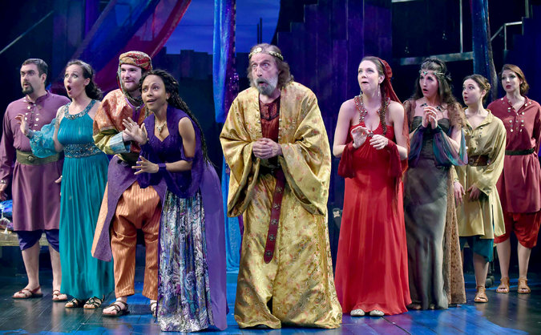
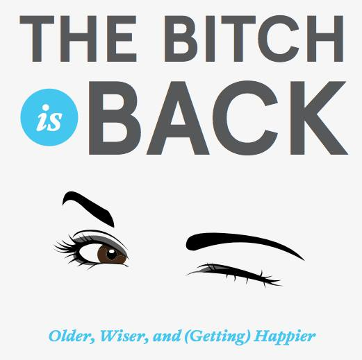

Translating Shakespeare? 36 Playwrights Taketh the Big Risk

Professor Ellen McLaughlin is one of 36 playwrights involved in "Play on: 36 playwrights translate Shakespeare", an ambitious effort to translate Shakespeare's plays into contemporary modern English.
The Bitch is Back: Older, Wiser, and (Getting) Happier

Join Barnard President Debora Spar, Prof. Jennifer Finney Boylan, best-selling author Cathi Hanauer and writer Lizzie Skurnick for a reading from the new book 'The Bitch is Back: Older, Wiser, and (Getting) Happier' and discussion on issues of feminism, womanhood, gender and race. The event is Wednesday Oct 5 at 6:30p.m. #thebitchisback
How Men and Women See the Workplace Differently
Lareina Yee '95, a senior partner at McKinsey and Company, co-authors "Women in the Workplace 2016", a major new study illustrating the difficult path that working women face when rising to leadership positions in business, and steps that companies can take to create a fairer, more inclusive work environment. #womeninbusiness